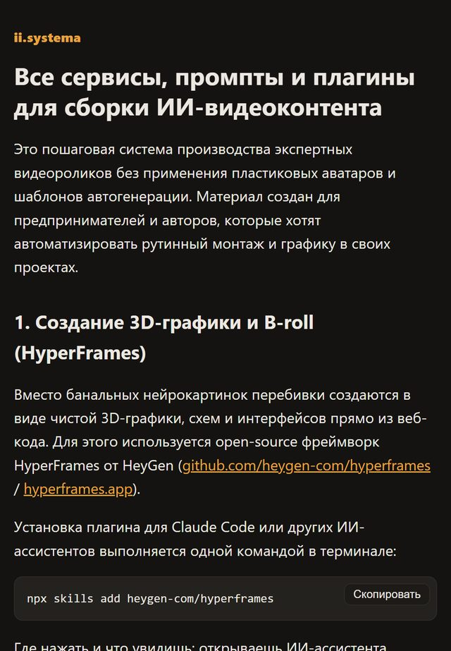
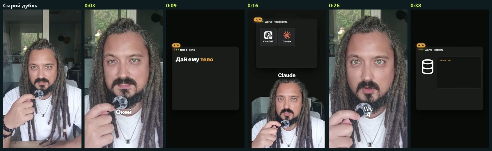
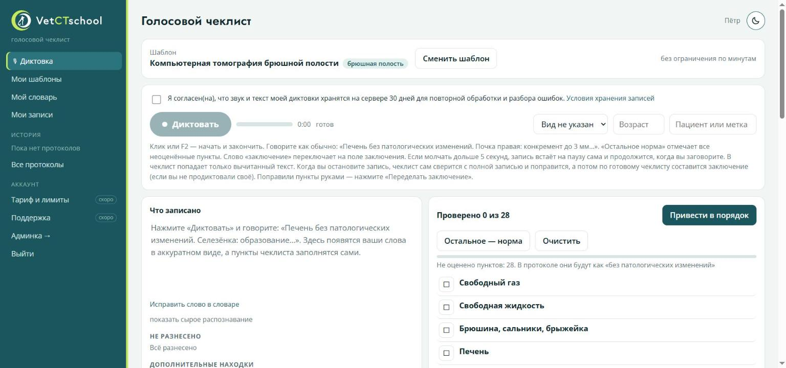

Хватит гуглить, как внедрить ИИ. Каждый день — готовая инструкция: скопировал, вставил, работает
Пошагово: какой сервис открыть, какой промпт вставить, куда нажать. Без курсов, марафонов и «воды». В закрепе — каталог из 63 инструкций, и он растёт каждый день.
🔒 Бесплатно · без спама · отписка в один клик
Знакомо?
В видео всё выглядит просто, но как повторить у себя — непонятно.
Нейросети обновляются каждую неделю, записи уроков — нет.
Потому что нужен не просто вопрос, а готовый промпт под задачу.
В канале всё наоборот: одна задача — одна инструкция — результат за 15–30 минут.
Что вы получите сразу после подписки
Это настоящие скрины: так выглядит то, что откроется у вас в телефоне.
Каталог из 63 инструкций
Все материалы в одном месте, свежие — сверху. Нашли свою задачу — открыли — сделали.
- Claude Code и ChatGPT для работы
- ИИ-боты, которые принимают заявки
- Бесплатные инструменты с GitHub
- Видео и фото на нейросетях
Пошаговые инструкции с готовыми промптами
Не «теория ИИ», а конкретика: шаг 1, шаг 2, шаг 3. Промпты и код копируются одной кнопкой.
- Где нажать и что вы увидите
- Готовые промпты — просто вставить
- Ссылки на все сервисы

Разборы реальных внедрений и ваших задач
Что сделали, сколько стоило, что сломалось и как починили. Напишите в комментариях, чем занимаетесь, — самые интересные задачи разбираю в канале.
- «Промпт недели»
- Цифры и расходы без прикрас
- Разбор вашей задачи
Только за последние дни в каталоге:
Подпишитесь — и откройте любую уже сегодня.
- 28 октябряКак защитить ИИ-бота от сбоев и не терять заявки: 3 шага плана Боткрыть →
- 28 октябряКак превратить ИИ-промпт в веб-сервис с кнопкой для всей командыоткрыть →
- 28 октябряКак не перепроверять за ИИ каждую заявку и сохранить качествооткрыть →
- 27 октябряПять задач в создании видео, которые стоит отдать нейросетямоткрыть →
- 27 октября5 команд ChatGPT для быстрой обработки фото и смены визуалаоткрыть →
- 26 октябряПять инструментов для анимированных дашбордов и быстрой версткиоткрыть →
Это работает не на словах
Те же подходы, что в инструкциях, я внедряю клиентам. Вот результаты:
больше не теряются
Бот бюро переводов отвечает в WhatsApp и Telegram, считает цену по прайсу и заводит сделку в AMO CRM.
Кейс Orient →
за 14 дней, один человек
ИИ пишет сценарии, монтирует, выкладывает на три площадки и отвечает в комментариях. 170 942 просмотра.
Кейс ii.systema →
документа стали базой знаний
Архив заключений превратился в поиск, а врач диктует протокол голосом. Разбор архива — около $29.
Кейс VetCTschool →Всё это — бесплатно
- Каталог из 63 инструкций в закрепе сразу
- Новая пошаговая инструкция каждый день
- «Промпт недели» и разборы внедрений каждую неделю
- Разбор вашей задачи в канале по комментариям
Займёт 5 секунд — Telegram откроется сам.

Кто пишет инструкции
Я Пётр Соловаров: 10 000+ часов в маркетинге и 5 лет работы с нейросетями. Внедряю ИИ в бизнес — боты для заявок, контент-конвейеры, базы знаний из документов.
Каждую инструкцию сначала проверяю на своих проектах: в канал попадает только то, что реально работает. А когда что-то ломается, честно пишу, что и почему.
Частые вопросы
Это правда бесплатно?
Да. Канал и каталог инструкций бесплатные, покупать ничего не нужно. Внедрение под ключ — отдельная услуга для тех, кто хочет, чтобы сделали за них.
Я не программист. Разберусь?
Да. Инструкции пишу для предпринимателей: где нажать, что вставить, что вы увидите. Если код и нужен — он копируется одной кнопкой.
Не будет спама?
Только по делу: инструкции, разборы и промпты. Не понравится — отписка в один клик.
Хочу, чтобы сделали за меня. Можно?
Да: бесплатный разбор в Telegram 30 минут → пилот на 14 дней на ваших данных → внедрение под ключ. Система остаётся у вас, сервисы оплачиваете напрямую, без моих наценок. Напишите мне лично слово «разбор».
Завтра выйдет новая инструкция. Будьте внутри
Подпишитесь сейчас — каталог из 63 инструкций откроется сразу, в закреплённом посте.
Для разбора вашего бизнеса напишите лично слово «разбор» — оно скопируется при нажатии.